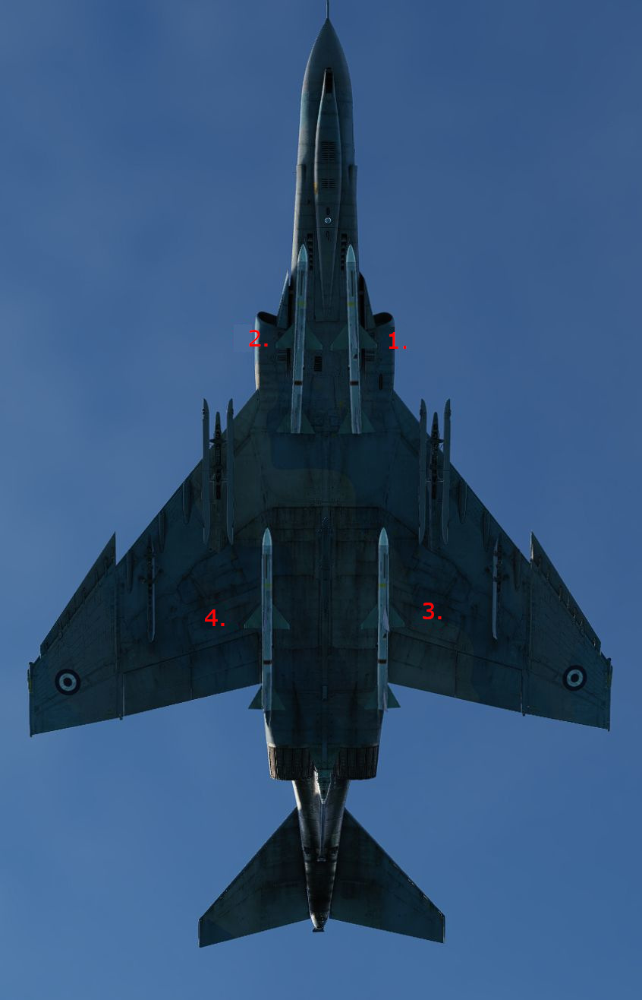

AIM-7 Sparrow

The AIM-7 is a semi active radar missile with a maximum launch range of approx. 26 nautical miles.
Originally designated the AAM-N-6 Sparrow III, the AIM-7 Sparrow saw initial service entry with the United States Navy in 1958. Unlike the beam-riding AIM-7A (AAM-N-2 Sparrow I), which required the launching aircraft to maintain boresight on the target for the flyout of the weapon, the semi-active radar homing AIM-7C could effectively engage a maneuvering target well off boresight, so long as the designating aircraft's radar could maintain a lock during the missile's intercept. The AIM-7C quickly gave way to the 7D, which saw a number of kills over Vietnam, and the 7E, which scored the majority of the type's kills in Southeast Asia. Additionally, the F-4E saw compatibility with the AIM-7F and AIM-7M.
Utilization of the AIM-7 begins with tuning the onboard rounds, performed with the RDR MSL switch , selecting it into the CW ON position. This tuning process takes approximately one minute, and can be initiated once power has been applied for at least one minute to the radar (any position out of OFF) in most operating environments (ambient temperature below 90 degrees F). The missiles are properly tuned when the missile status light (RDR) is illuminated in each station carrying a Sparrow missile for at least one minute. After successful tuning, the RDR MSL switch can be returned to the STBY (Standby) position. The status lamps will turn off once returned to STBY. Once in the combat area, the RDR MSL switch should be returned to the CW ON position, to maintain proper missile tuning state during the engagement.
To employ an AIM-7, the optical sight should be placed into the A/A position, which stabilizes the Reticle at the Radar Boresight Line in the window. The roll tabs function to provide the pilot with relative roll attitude guidance in instrument conditions (weather or nighttime), and the right side of the 50 mil diameter circle (outer) functions as a range bar when a radar lock is achieved against a target, displaying ranges up to 20,000' (top) to 3000' (bottom), with 12,000' signified at the 3 o-clock position. It is also possible to employ an AIM-7 using the ACM Mode via pressing the Cage Button first and than pressing the CAA Button to accomplish a lock.

When radar lock against a target is achieved with AIM-7 selected, a pair of strobes surround the locked target in azimuth. Identified as Rmax and Rmax 2, they represent effective ranges against a 1 G target (Rmax), and a high rate maneuvering target based on altitude (Rmax 2, representing 8G up to 20k, 6G to 35k, and 4G above 35,000'). When a missile is launched, the Rmax 2 strobe falls to the bottom of the display, and begins driving upwards towards the target lock; this functions as a missile flyout timer. When the timer reaches the locked target, it can be assumed the missile has arrived. The display does not provide Rmin, but instead reverts to a break X warning superimposed over the radar image should Rmin be attained for a Sparrow launch.

Prior to engagement, a determination must be made as to whether or not the missile interlocks will be kept in, or positioned out. The interlocks preclude an AIM-7 shot when outside of effective firing parameters, those being the missile in range (illuminating the IN RANGE light), the target aim dot within the ASE (Allowable Steering Error) circle on the radar display, and the radar display mode out of VI (Vis-Ident mode).
With the interlocks in, should any of the three aforementioned restrictions be met - target out of range, aim dot outside the ASE, or the radar left in VI, a trigger actuation will not cause the release of a missile. With interlocks out, an AIM-7 will be released no matter the condition of the three interlocks.
When parameters are met, the SHOOT lamps will illuminate. Found in both cockpits, these lights reinforce the condition of good launch conditions for the AIM-7. In the event a target enters a main beam clutter situation (aspect angle between 81 and 99 degrees and lower than 5 degrees above the horizon), the lights will turn off, even though the interlock requirements are met. Maneuver should be utilized to bring the target outside this region prior to launch.
At the point of engagement, AIM-7 missiles are selected using the Pinky Switch on the outboard (left) throttle arm, selecting the forward position. This illuminates the RADAR lamp on the Head Up Display panel.
Before employing the AIM-7E Sparrow, a delay of four seconds should be given if the Master Arm switch is set in the ON position prior to radar lock on, or a delay of two seconds if the Master Arm switch is set to ON after radar lock on. This is due to the set-in period of the missile speed-gate. With the AIM-7F, this delay is reduced to two seconds with Master Arm switch On prior to lock, or immediately after selecting Master Arm switch to On if lock on was achieved first. Should these delays not be adhered to, the missile may fail to track because of improper target doppler injection.
With the target in parameters or interlocks out, pressing the trigger fires off an AIM-7. A second AIM-7 can be fired immediately at the same target, if desired, by releasing, then squeezing the trigger a second time- holding it on the second actuation.
Launch Sequence

The launch sequence for the AIM-7 missile is
- Left Forward
- Right Forward
- Left Rear
- Right Rear
In the event of a centerline store or tank precluding forward missile release, the CL TK lamp will illuminate. Rear missiles may still be fired, and the forward missiles may be fired if the centerline tank is dropped or MER is jettisoned. The lamp also illuminates in the event of a BRU-5/A in the centerline position, however, a missile can be launched in that condition. The Aero-27 precludes any release, even if the round has been dropped.
Variants
The following variants of the AIM-7 family are available for this variant of the Phantom:
| Variant | Description |
|---|---|
| E | The AIM-7E Sparrow was an early version of the Sparrow missile, entering service in the 1960s. It featured semi-active radar homing guidance, relying on radar illumination from the launching aircraft for target tracking. |
| E-2 | The AIM-7E2 was an improved version of the AIM-7E, featuring enhancements to its guidance system and overall performance. It retained semi-active radar homing but included improvements to increase its effectiveness in combat. |
| F | The AIM-7F, an upgraded variant, introduced improvements in the missile's guidance system and reliability. It featured enhanced seeker technology and improved signal processing capabilities, enhancing its ability to engage targets at longer ranges. |
| M | The AIM-7M Sparrow represented a significant advancement in Sparrow missile technology and became a widely used variant. It incorporated a more advanced guidance system, including a monopulse radar seeker, which improved tracking accuracy and resistance to electronic countermeasures. The AIM-7M had a longer range compared to its predecessors, making it a versatile medium-range air-to-air missile. |